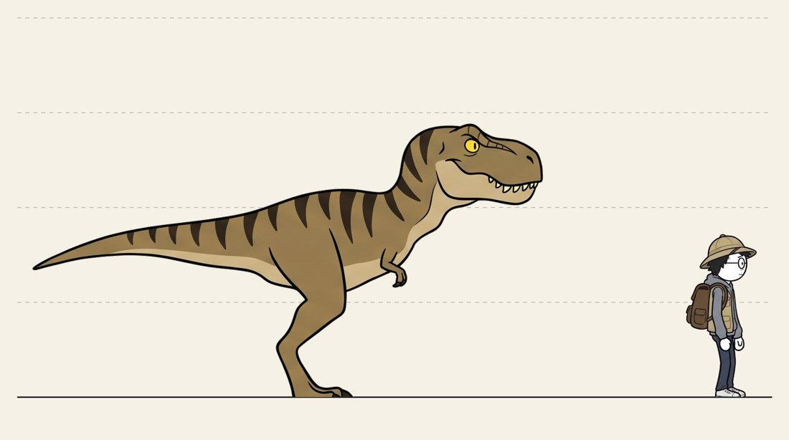

暴龍比例檢查
EP1 幕 1 第 2 版，Codex 和 Claude 各自分鏡後 Flow 畫出來的圖。每張跟比例圖並排，眼睛看了覺得 TEEN 和 HERO 的大小關係跟比例圖一致，就算一致（考慮誰離鏡頭近、誰遠）。不用公式、不用地圖距離。判斷是 Claude 看圖做的。

比例圖 PAIR_TEEN
站在同一個距離時：TEEN 頭頂 2.89 m，HERO 1.72 m，TEEN 是 HERO 的 1.68 倍高；TEEN 的頭大約有 HERO 身高的三分之二長。
總表
| 來源 | 圖 | 張 | 判定 | 該怎麼改 |
|---|